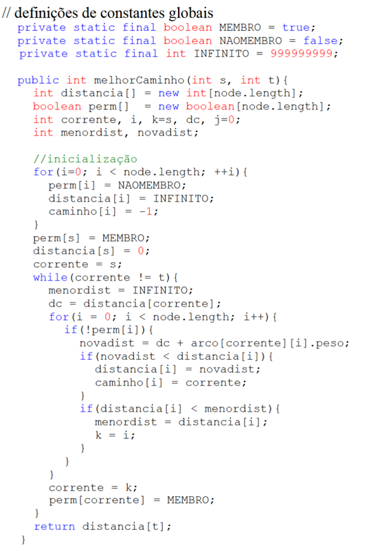

Guia de Estudos de Grafos
Alterne entre 'Teoria', 'Prática' e 'Quiz' para aprofundar seus conhecimentos.
O que são Grafos?
Um grafo consiste de um conjunto de nós e um conjunto de arcos. Cada arco em um grafo é especificado como um par de nós. A Figura 1 ilustra um grafo. O conjunto de nós é {A,B,C,D,E,F,G,H} e o conjunto de arcos é {(A,B), (A,D), (A,C), (C,D), (C,F), (E,G), (A,A)}.
Ele consiste em duas partes principais:
- Vértices (ou Nós): Representam os objetos ou entidades. Pense neles como cidades em um mapa, pessoas em uma rede social ou páginas na web.
- Arestas (ou Arcos): Representam as conexões ou relações entre os vértices. Uma aresta conecta um par de vértices, como uma estrada entre duas cidades ou um link entre duas páginas.
Um grafo é comumente utilizado para representar Relações. Uma relação R sobre um conjunto A de nós é um conjunto de pares ordenados a partir de A. Por exemplo, se A = {3, 5, 6, 8, 10, 17} e o conjunto R = {<3,10>, <5,6>, <5,8>, <6, 17>, <8,17>, <10,17>} é uma relação. A relação R é obtida computando o resto da divisão do valor armazenado no nó pelo valor associado ao arco (Figura 3). Quando um grafo possui arcos com valores associados, o grafo é dito grafo com peso, onde o valor associado ao arco é o peso do arco. Um caminho de tamanho k de um nó a até um no b consiste numa seqüência de k + 1 nós n1, n2, ..., nk+1 tal que n1 = a e nk+1 = b e (ni é adjacente a ni+1) para 1 < i < k. Na Figura 2 existe um caminho de tamanho 2 entre os nós A e D: {A,C,D}.Um caminho de um nó n até ele mesmo é chamado um ciclo. Um grafo que possui ciclos é chamado cíclico e um grafo que não possui ciclos é chamado acíclico.
Tipos de Grafos
Grafos podem ser classificados de várias maneiras, dependendo de suas propriedades:
- Grafo Não-Direcionado: As arestas não têm uma direção. Se existe uma aresta entre A e B, a conexão é mútua (A está conectado a B e B está conectado a A). Ex: amizades no Facebook.
- Grafo Direcionado (Dígrafo): As arestas têm uma direção, indicadas por setas. Uma aresta de A para B não implica necessariamente uma aresta de B para A. Se um nó representa um par ordenado então o grafo é chamado de direcionado ou
dígrafo. A Figura 2 ilustra um dígrafo. O conjunto de arcos da Figura 2 é {
- Grafo Ponderado: Cada aresta tem um valor numérico associado, chamado de peso. Esse peso pode representar distância, custo, tempo, etc. Pode-se verificar que todas árvore é um grafo, mas o contrário nem sempre é verdadeiro, além disso, um nó pode não possuir nenhum arco ligado a ele. Um nó n é chamado incidente sobre um arco x se n é um dos nós que constituem o par ordenado x (também diz-se que x é incidente sobre n). O grau de um nó é o número de arcos que são incidentes sobre ele. O grau de entrada de um nó n é o número de arcos que chegam em n. O grau de saída de um nó é o número de arcos que partem de n. Um nó n é adjacente a um nó m se há um arco partindo de m para n. Se n é adjacente a m, n é chamado sucessor de m e m o predecessor de n. Ex: um mapa de estradas onde o peso é a distância entre cidades.
- Grafo Não-Ponderado: As arestas não têm pesos. Assume-se que todas as conexões têm o mesmo "custo" (geralmente 1).
- Grafo simples: um tipo de grafo que não possui laços (arestas que conectam um vértice a si mesmo) nem arestas múltiplas (mais de uma aresta ligando o mesmo par de vértices).
- Grafo rotulado: é um grafo onde vértices ou arestas possuem rótulos associados, que podem ser números, letras ou outros símbolos, para representar informações adicionais ou funções.
- Grafo conexo/desconexo: Um grafo é considerado conexo se existe um caminho entre qualquer par de vértices no grafo. Caso contrário, o grafo é chamado de desconexo.
- Grafo completo: é um tipo de grafo em que todos os pares de vértices distintos são conectados por uma aresta.
- Grafo conexo: um grafo é considerado conexo se existe um caminho entre qualquer par de vértices no grafo. Caso contrário, o grafo é chamado de desconexo.
- Grafo bipartido completo: é um tipo especial de grafo bipartido onde cada vértice de um conjunto é conectado a todos os vértices do outro conjunto.
- Grafo planar: um grafo que pode ser representado no plano sem que suas arestas se cruzem.
- Grafo cíclicoUm caminho de um nó n até ele mesmo é chamado um ciclo. Um grafo que possui ciclos é chamado cíclico.
- Grafo acíclicoum grafo que não possui ciclos.

Conceitos
- Vértices adjacentes: vértices que estão conectados por uma aresta.
- Laço: é uma aresta que conecta um vértice a ele mesmo.
- Arestas paralelas: duas ou mais arestas que conectam o mesmo par de vértices em um grafo.
- Caminho: um caminho em um grafo é uma sequência finita ou infinita de vértices conectados por uma sequência de arestas que, na maioria das definições, são todos diferentes uns dos outros. O primeiro vértice é chamado de vértice inicial e o último é chamado de vértice final.
- Comprimento/tamanho do caminho: é o número de arestas que ele contém.
- Ciclo: um conjunto de vértices conectados em uma sequência fechada.
- Grafo cíclico/acíclico: possui pelo menos um ciclo, ou seja, um caminho fechado que começa e termina no mesmo vértice, sem passar duas vezes pelo mesmo vértice intermediário. Por outro lado, um grafo acíclico é aquele que não contém nenhum ciclo.
- Subgrafo: um subgrafo de um grafo G é um grafo cujo conjunto de vértices é um subconjunto do conjunto de vértices G e o conjunto de arestas é um subconjunto do conjunto de arestas de G,[1] ou seja, cuja relação de adjacência é um subconjunto de G restrita a esse subconjunto. Dizemos que um grafo G contém um outro grafo H se algum subgrafo de G é H ou é isomorfo a H.
- Grau de um vértice: quantidade de arestas ligadas a ele.
- Grau de entrada de um vértice: é o número de arestas que chegam a ele.
- Grau de saída de um vértice: número de arestas que partem dele.
- Vértice isolado: vértice de grau zero.
- Componente de um grafo: Em um grafo vazio , cada vértice forma um componente com um vértice e zero arestas. De forma mais geral, um componente desse tipo é formado para cada vértice isolado em qualquer grafo.
Representações de Grafos
Matriz de Adjacência
Se um grafo possui o número de nós constante (nós não podem ser criados e removidos), por exemplo MAX e não possui pesos nos arcos ele pode ser representado como uma matriz m booleana quadrada de tamanho MAX. Quando a posição m[i][j] é true então existe um arco que sai de i e chega em j, ou seja, j é adjacente a i. A Figura 4 ilustra a representação de um grafo e sua matriz de adjacência correspondente.
A representação de um grafo sem peso, sem informação associada e número constante de nós pode ser obtida simplesmente com a declaração:
Representação de Grafos com Peso e Informação nos Nós
Como comentado anteriormente, um grafo pode necessitar armazenar pesos em seus arcos e informação dentro de cada nó. Desta forma uma possível representação com um número constante (MAX) de nós (nós não podem ser adicionados ou removidos) seria a seguinte:
Fechamento Transitivo
Nesta seção é assumido que um grafo é descrito por sua matriz de adjacência m e não há informação contida no nó nem nas ligações. Dada a expressão m[i][k] && m[k][j], obtém-se o valor true se e somente se os valores de m[i][k] e m[k][j] são true, logo isso implica que há um caminho de tamanho 2 entre o nó i e o nó j que passa por k. Portanto dada a expressão:
ela será true se que há um caminho de tamanho 2 de i até j passando por 0, ou passando por 1 ou passando por 2 ... ou passando por MAX-1. A matriz m representa todos os caminhos de tamanho 1. A matriz m2 representa a matriz de todos os caminhos de tamanho 2, a matriz m3. A multiplicação de matrizes booleanas é feita de maneira semelhante à multiplicação de matrizes numéricas. Obviamente não será possível fazer a multiplicação nem a soma de elementos da matriz. As únicas modificações necessárias no algoritmo de multiplicação de matrizes são:
- substituir somas pelo operador de disjunção “| |”;
- substituir multiplicações pelo operador de conjunção “&&”.
A Figura 5 ilustra o processo pelo qual se pode encontrar todos os caminhos de tamanho 2 dentro de um determinado grafo.

Portanto se for necessário encontrar todos os caminhos de tamanho tam dentro de um grafo, basta encontrar a matriz mtam. Para verificar se há um caminho de tamanho tam entre dois nós i e j, basta verficar se mtam[i][j] = true. A soma (ou disjunção) dentre duas matrizes mi + mj (mi | | mj) retorna, portanto, todos os caminhos de tamanho i ou j dentro do grafo. Pode-se concluir que se é necessário encontrar todos os caminhos no grafo de quaisquer tamanhos, basta realizar o seguinte somatório (disjunção):
o que é equivalente a:
A matriz obtida pelo somatório (disjunção) anterior é chamada de fechamento transitivo da matriz m e representa todos os caminhos existentes dentro do grafo independente de tamanho.
Algoritmos Fundamentais
Algoritmo de Warshall
Na aula anterior foi estudado como era possível encontrar o fechamento transitivo de um grafo representado como matriz de adjacência. Tal método consistia em encontrar a matriz mtam utilizando sucessivas operações de soma (disjunção). Existe um algoritmo chamado Algoritmo de Warshall que é capaz de encontrar o fechamento transitivo de um grafo representado como matriz de adjacência. O algoritmo inicia com um índice k que representa as colunas da matriz. Para cada valor de k tenta-se encontrar uma linha i com valor true. Se uma linha i com valor true é encontrada, faz-se uma atualização dessa linha i com a disjunção entre essa linha e a linha que possui o índice k. O algoritmo de Warshall está colocado a seguir.
Algoritmo de Dijkstra
Em um grafo com peso, uma operação muito comum consiste em encontrar o menor caminho entre dois nós. O caminho mais curto entre dois nós s e t é o caminho cuja soma dos arcos é minimizado. Será assumido a existência de uma função peso(i,j) que retorna o peso do arco que sai de i e chega em j. Caso este arco não exista, a função retornará um valor bastante grande chamado infinito que denota a situação de impossibilidade de se alcançar o nó j a partir de i em um único passo.
O algoritmo funciona da seguinte forma: distancia[i] armazena o custo do menor caminho do nó s até i. Inicialmente distancia[s] = 0 e distancia[i] = infinito para todo i != s. Um conjunto perm contém todos os nós cuja distância mínima de s é conhecida, ou seja, aqueles nós cujo valor da distância é fixa e não mudará. Se um nó i é um membro de perm, distancia[i] é a distância mínima de s até i. Inicialmente, o único membro de perm é s. Uma vez que t torna-se um membro de perm, sabe-se que distancia[t] é a menor distância de s até t e o algoritmo termina.
O algoritmo mantém uma variável chamada corrente, que é o último nó adicionado a perm. Inicialmente corrente = s. Quando um nó corrente é adicionado a perm a distância deve ser recalculada para todos os sucessores de corrente. Para qualquer sucessor i de corrente, se distancia[corrente] + peso(corrente,i) é menor que distancia[i], a distância de s até i passando por corrente é menor que qualquer outra distância de s até i encontrada até esse momento. Portanto, distancia[i] deve ser atualizada com esse menor valor.
Uma vez que distancia foi recalculada para todo sucessor de corrente, distancia[j] (para qualquer j) representa o caminho mais curto de s até j que inclui somente membros de perm (exceto o próprio j). Isto significa que para todo k que não pertence a perm, para qual distancia[k] é o menor, não há caminho de s até k cujo tamanho é mais curto que distancia[k]. Desta forma k pode ser adicionado a perm. corrente é então reiniciado com k e o processo é repetido.
O método a seguir implementa o algoritmo do menor caminho. O método utiliza um conjunto adicional caminho tal que caminho[i] é o nó que precede o nó i no caminho mais curto encontrado. O procedimento retorna a menor distância entre dois nós s e t e armazena em precede os nós que formam o menor caminho.
A partir do vetor caminho pode-se mostrar o menor caminho encontrado pelo algoritmo com o procedimento imprimeCaminho.
Exercícios
1. A partir do grafo representado na Figura 1:
- a) encontre sua representação como matriz de adjacência;
- b) encontre o fechamento transitivo do grafo utilizando multiplicação de matrizes;
- c) encontre o fechamento transitivo do grafo utilizando o algoritmo de Warshall.
- 2. Ilustre graficamente um dígrafo correspondente a cada uma das seguintes relações sobre inteiros de 1 a 12:
- a) x está relacionado a y se x – y é divisível por 3;
- b) x está relacionado a y se (x + 10 * y) < (x * y);
- c) x está relacionado a y se o resto da divisão de x por y é 2.
Travessia em Grafos
Muitos problemas com grafos envolvem a travessia e acesso a todos os vértices de um grafo. Durante aulas anteriores já foram estudados métodos de travessia em árvore binária (inordem, pré-ordem e pós-ordem) e lista encadeada (seqüencial). Porém, quando tratamos de travessia em grafos não existe uma ordenação natural entre os vértices, diferentemente de árvores ou listas. Portanto algumas questões tornam a travessia em grafo mais complexa:
- Não existe um nó que naturalmente seja o inicial. Em uma lista encadeada sempre inicia-se com o primeiro da lista e árvore sempre com a raiz. Além disso, quando um nó inicial é pré- determinado, nem sempre todos os vértices do grafo poderão ser visitados, pois podem existir vértices que não são alcançáveis a partir do nó inicial. Em lista ou árvore, todos os nós eram visitados, desta forma, um novo nó inicial deve ser determinado para que o grafo seja completamente percorrido;
- Não há uma ordem natural entre os sucessores de um determinado vértice. Desta forma, a partir de um determinado vértice, não há uma ordem obrigatória na qual os sucessores são visitados;
- Um determinado vértice pode ter mais de um predecessor, desta forma, se um determinado vértice v possui mais de um predecessor, é possível que v seja visitado antes de algum predecessor.
Existem duas formas tradicionais de travessia em grafos: busca em largura e profundidade. A busca em largura utiliza uma lista para armazenar os vértices visitados. A busca em profundidade utiliza uma pilha que não precisa ser explicitamente implementada quando se utiliza recursão.
Busca em Profundidade (DFS)
Será considerado que a tarefa do procedimento de travessia consiste em a partir de um determinado vértice (neste exemplo “0”) visitar (processar) todos os outros vértices. Considere a Figura 1.
A partir do grafo anterior o primeiro nó a ser processado é o nó inicial 0. O grafo da Figura 1 é ilustrado na Figura 2. A partir do nó inicial há duas alternativas: continuar o processo no nó 1 ou no nó 4. Considere que o nó escolhido é o nó 1. O processo é ilustrado na Figura 3. A partir do nó 1 seu único vizinho ainda não visitado é escolhido para que o processo continue. Essa situação é ilustrada na Figura 4.
Seguindo a estratégia de escolher o nó com menor conteúdo (ou menor nó) para prosseguir o processo de travessia, a partir do nó 3 o nó 0 seria o escolhido. Essa é uma situação interessante. Se o nó 0 for o escolhido, o processo de travessia entrará em loop infinito, pois o caminho 0-1-3- 0 forma um ciclo, uma vez que a origem e o destino do caminho são os mesmos. Portanto é necessário uma estratégia para evitar tal problema. Geralmente um nó marcado como visitado nunca será escolhido novamente, uma vez que ele já foi processado. Portanto restam os vértices 5 e 6 (adjacentes a 3). Considerando que o vértice 5 seja o escolhido, o grafo seria representado mostra a Figura 5.
Como o vértice 5 não possui nós adjacentes, a busca não pode continuar seguindo adiante. Neste caso o processo retorna para o vértice visitado anteriormente (vértice 3) e verifica se existe mais algum nó adjacente que ainda não foi visitado. Neste exemplo o vértice 3 possui o vértice 6 adjacente e não visitado, portanto o vértice 6 será o próximo vértice escolhido, como ilustrado na Figura 6. Como o vértice 6 não possui mais vértices adjacentes ainda não visitados, o processo retorna para o vértice 3. Neste ponto, o vértice 3 também não possui nenhum outro nó adjacente ainda não visitado, portanto, o processo retorna para o nó anterior ao 3 (vértice 1) e tenta encontrar outro nó adjacente não visitado. Como o vértice 1 não possui nenhum nó adjacente ainda não visitado, o processo retorna ao vértice 0 que possui o adjacente 4 ainda não visitado. Logo o vértice 4 é escolhido como ilustrado na Figura 7. Como não há mais nenhum vértice adjacente a 0 e ele é o vértice inicial, o processo é encerrado.

É possível perceber que esse processo pode ser implementado de maneira muito simples utilizando um algoritmo recursivo. A pilha de chamadas recursivas é ilustrada na Figura 8.
Busca em Largura (BFS)
1. Se a fila de vértices não está vazia então
- 1.1. Remover o vértice i que está na fila // note-se que uma fila sempre remove o primeiro elemento
- 1.2. Processar o vértice i
- 1.3. Adicionar os vértices adjacentes a i na fila // um nó só é adicionado se ele já não foi visitado
- 1.4. Executar o procedimento 1 sobre a fila atualizada
É importante ressaltar que na primeira chamada do algoritmo a fila contém um único vértice que é o vértice inicial.
Vantagens e desvantagens de Busca em Profundidade e Largura
As duas metodologias de travessia em grafos possuem vantagens e desvantagens. Ambas podem ser utilizadas para se encontrar um determinado elemento dentro de um grafo. Considere-se, por exemplo as Figuras 15 e 16
Os grafos das Figuras 15 e 16 são os mesmos. A partir do vértice 0 tenta-se encontrar o vértice o vértice 6. Pode-se verificar que se a busca em profundidade é utilizada muito mais vértices precisam ser visitados para que a solução seja encontrada. No exemplo, os vértices [0, 1, 2, 3, 4, 8, 9, 5, 10, 11, 12, 2 e 6] precisam ser visitados. Por outro lado, com busca em largura muito menos vértices precisam ser visitados [0, 1, 2, 3, 4, 5, 6]. Geralmente a busca em largura tende a encontrar a solução de um problema de busca necessitando menos comparações. Além disso a busca em largura trata naturalmente o problema de ciclos em grafos. Porém sua implementação tende a ser mais complexa, pois necessita de uma fila para armazenar os vértices. A busca em profundidade possui uma implementação mais simples, porém necessita de um mecanismo auxiliar para tratamento de ciclos, geralmente implementado marcando os vértices como visitados.
Exercício
A partir do Grafo a seguir mostrar a seqüência com que os vértices são visitados executando tanto busca em largura quanto busca em profundidade a partir do vértice A:
Use o modo 'Sandbox' para construir seu grafo ou visualize 'Algoritmos' em ação.
Clique na tela para adicionar um nó.
Quiz sobre Grafos
Teste seus conhecimentos. Escolha um dos quizzes abaixo para começar.
Quiz Finalizado!
Sua pontuação foi: